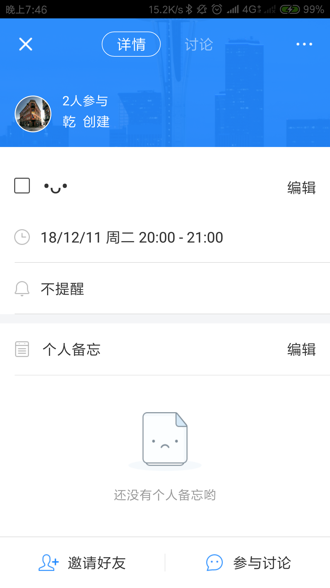

看到朝夕日历被字节跳动收购的消息，于是想要深入了解一下，但是过程中发现效率工具目前市场比较小，并没有相关的行业分析报告进行数据支撑，朝夕日历也是一款总下载量一百多万的小众产品，收录的信息不多，因此主要从产品迭代、功能以及创始人愿景等方面进行分析，去感受这个产品的辗转起伏。
1.产品概况
1.1 体验环境
体验机型：MI 6
系统版本：MIUI 10.0
APP版本：2.9.1
体验人：cemeworm
体验时间：2018.12.9
1.2 产品介绍
产品名称：朝夕日历
产品类型：日程管理
产品slogon：给时光以生命，而不是给生命以时光
产品logo：
产品定位：一款智能的时间助理
产品介绍：朝夕日历希望通过语音识别、自然语言处理、人工智能和推荐算法帮助用户快速安排日程，并通过社交方式实现多人时间协调
商业模式：曾尝试通过微课进行变现，但最终失败，目前没有看到任何变现手段
1.3 swot分析
在进行迭代分析之前，我先根据产品体验的结果尝试做了一个swot分析
优势：
入场早，通过微信端运营沉淀了主要用户
微信端、APP端和网页端齐备，满足用户不同程度的需求
轻量、专注，核心功能日程管理长板较长
劣势：
- 大部分中国人的时间观念不够强，以时间为基础的日程管理比以事件为基础的清单管理更难推广
机会：
用户迁移成本较高，一旦深入使用不容易更换
由于文化差异和某些原因，国外优秀日历产品的服务体系在中国并不完全适应
威胁：
- 没有非常深的护城河，同类产品或许长板拼不过，但可以快速跟进，并提供差异化服务
增长型战略（优势+机会）：通过提供差异化服务，将微信端沉淀的用户导流到APP上，并且不断迭代让长板更长
扭转型战略（劣势+机会）：通过用户容易参与的活动激发用户日程管理的兴趣，并通过超出预期的方便功能留住用户
防御型战略（劣势+威胁）：针对国人特性开发更适应国内市场的壁垒服务
多元化战略（优势+威胁）：更快抢占市场，并提高用户迁移成本
但是当我认真去研究产品的迭代情况，了解创始团队的公开言论之后，我深深地觉得创业公司做产品，尤其是工具型产品，真的是带着镣铐跳舞，个中艰难，或许旁人根本无法了解。
1.4 迭代分析
1.4.1 迭代路径
| 迭代版本 | 版本日期 | 迭代内容 | 注释 |
|---|---|---|---|
| 1.0 | 2014年9月5日 | 产品上线 | |
| 1.0.1（大版本） | 2014年10月21日 | 核心功能：中文自然语言处理、语音添加优化：强化了关联好友功能 | 不需要再选择时间，直接输入时间即可识别 |
| 1.0.3（大版本） | 2014年12月12日 | 核心功能：长按添加按钮即可语音添加日程、能够根据日程的时间自动选择日程类别、不用翻墙即可同步谷歌日历优化：去除主题中已经识别出的时间 | 1、至此朝夕日历的日程管理核心功能大体已经完成2、根据日程的时间（这里说的是时间，而非日程内容）自动选择日程类别这个功能并没有复现出来，按我的理解，应该是根据大数据和日常模板建立什么时间人们大概率干什么的画像，再结合用户的个人历史数据打上标签，但是为什么说仅从时间维度进行分析就不得而知了，或许是开发者表述错误 |
| 1.1（大版本） | 2015年1月20日 | 功能：添加视图优化：全新UI、修改添加日程交互 | |
| 1.2（大版本） | 2015月10月24日 | 功能：支持添加好友，日程讨论优化：正式更名为“朝夕日历”全新设计 | 1、开始内置IM2、与上一次更新时隔9个月，再往后的迭代中可以看出在这期间应该是有一些方向上的调整，探索新的涉足点，考虑变现方式 |
| 1.2.3（大版本） | 2015年12月4日 | 功能：智能添加（超强离线语音识别）提示日程冲突日程详情支持富文本优化：更改到微信的分享样式 | 1、提示日程冲突在现在的版本没有复现出来 |
| 1.3 | 2016年1月7日 | 功能：支持日程讨论优化：优化设计 | 1、智能设计日历的定位完成了智能和日历，现在开始往社交发力，但是以活动日程为基础，以日程讨论为方式的社交一个微信群就可以搞定了2、很多人是不下载朝夕日历APP的，只是在微信端使用，但是在微信端又不能实现日程讨论，显得有点鸡肋 |
| 1.4.1 | 2016年2月17日 | 功能：增加了活动号和活动相关功能日城内沟通支持了图片和超链接支持读取剪切板 | 1、从该版本开始逐渐加强活动这一功能的比重，在该版本的底部的三个tag中，日程对应日程管理，动态则对应活动2、用户真的会到朝夕日历中去看这种活动微课吗？这有点偏离了朝夕日历的初衷，智能的时间助理，这不是一个助理该干的事，后面活动功能的失败也印证了这一点 |
| 1.4.3 | 2016年3月23日 | 功能：活动讨论上线，支持发语音优化：优化设计 | 1、活动讨论即在微课的讨论区进行讨论 |
| 1.6 | 2016年6月24日 | 功能：新增了动态页、推荐关注和热门活动等功能优化：优化设计优化语音识别地点的效果 | 在这个产品的逻辑中，管理好用户时间之后，能够让用户发现生活，但是发现生活和在APP上上微课是两码事，它应该做的是根据用书个人历史数据分析，给用户推荐一些相关活动 |
| 1.7 | 2016年7月25日 | 功能：支持早起打卡支持重复性日程的标记完成增加了个人备忘和会议纪要优化：优化设计优化性能 | 早期打卡活动累计有百万数量级的人参与，是一个不错的点，除了让用户进来打卡增加产品活跃度之外，还能让用户养成日程管理的习惯 |
| 1.9 | 2016年8月12日 | 功能：讨论支持附件支持邀请卡邀约优化：优化APP端听音频的逻辑优化自然语言处理 | |
| 2.0 | 2016年8月23日 | 功能：增加日程搜索功能优化：全新设计风格优化日程邀约和日程讨论方案优化了地点识别功能 | |
| 2.3 | 2016年11月30日 | 功能：自动识别垃圾日程，一键删除垃圾日程日程直接邀约群组支持共享日历 | 1、在版本2.3中并没有看到一键删除识别垃圾日程的功能2、我经历过的垃圾日程的场景是本地日历中因不明原因自动添加了一些奇奇怪怪的日程 |
| 2.4.2 | 2017年5月9日 | 功能：底层优化把动态移至设置页，让APP变得更轻 | 把动态降级了，可以说是朝夕日历变现的一次失败尝试 |
| 2.4.5 | 2017年7月19日 | 功能：编辑日程时支持大爆炸的效果 | |
| 2.5.0 | 2017年9月15日 | 优化：优化了铃声 | 活动中的大部分微课在最后更新时间基本停留了这一阶段 |
| 2.5.1 | 2018年7月12日 | 优化：修复了若干bug | 时隔1年就修复了bug |
这里选取了一部分朝夕日历迭代的重要版本。
朝夕日历是在微信端验证了核心功能，即日程管理的需求之后才开始开发APP，因此从1.0到1.1版本的迭代路线比较清晰，专注其智能社交日历定位中的智能和日历。
在时隔8个月之后的1.2.3版本开始朝夕日历在社交协同和变现路上探索，先后在APP中增加了添加好友、内置IM的日程讨论和极其重视的活动动态功能。
朝夕日历想要通过微课活动的变现尝试失败后，在2.4.2版本后将动态一再降级，从第一层的底栏tag，到更换后的底栏tag消息中分栏，再到最后将入口放置在了设置的列表中，其微课活动也停止运营，最后更新时间大多停留在了17年9月。
在17年9月15日小幅更新了2.5.0版本之后，时隔一年于18年7月12日才更新了2.5.1版本，并且只是修复了bug。
1.4.2 迭代分析
从迭代中我们可以发现，朝夕日历早期的迭代方向非常明确，就是不断优化核心功能——更方便的日程录入，当基础部分已经基本实现之后，迭代的重心在时隔8个月后的1.2.3版本发生转变。
根据朝夕日历团队的公开言论透露：
在谈到“朝夕日历”未来的发展规划时，程昊表示，很多人会认为日历和AI没有任何关系，但其实一些大公司像谷歌、苹果都在朝这方向去做，而“朝夕日历”正是要做基于时间管理的智能助理。如你给自己设定了一个健身时间，这时候“朝夕日历”则会根据你的时间安排帮你推荐健身房、或者有健身教练直接上门。而这也是团队日后一个很明确的盈利模式。
如果是手动添加日程，很多信息要靠人为去判断，而在一切都实现自动化后，实际上日历就可以完成这些事情。比如在出行前叫车，这个叫车时间是动态变化的，要根据距离、天气、交通状况等因素来综合判断，日历在掌握一定数据后，这些都可以自动化完成分析，然后在准确的时间提醒用户，提前做好准备。在日程中加入叫车、餐馆推荐等服务，也为日历工具未来的盈利提供了可能。
他们想要对标的不是其他传统意义上的日历和清单管理，而是垂直于时间维度的人工智能助理。但是要打通这些服务，朝夕日历无论是在技术积累，还是在资源生态上，都是非常难，甚至目前不可能做到的。
过于远大的目标无法实现，眼前又要谋求变现生存，该怎么办呢？1.1版本和1.2版本之间隔了有足足9个月，这在初创公司的产品中是难以置信的，或许是他们也没想清楚，眼前的路要怎么走。
1.2版本是一个重大转折，推出了全新的设计，正式更名为朝夕日历。一开始我在想，为什么朝夕日历要为了日程讨论开始迭代内置IM，并且这个功能只有在APP上才有，也就是说使用微信端的大部分人是无法使用或者看到的，但是当我继续看“活动”这条迭代路线的时候，我认为这个其实更多是为了活动讨论做铺垫。
从1.4.1版本开始，“活动”相关的比重不断加大，并且一度占据了一个一级页面，但是估计这个尝试在APP上没有取得好的成果，在2.4.2版本开始这个功能的入口越藏越深，最后只在设置的列表中给它留了一格之位，并且微课内容也大多数在17年9月份左右停止更新，目前可见的朝夕日历唯一一次变现尝试以失败告终。
不知道是不是理想与现实之间的差距让团队无所适从，或者是他们已经有了这个产品以外的事情要做（朝夕日历公司于17年9月被字节跳动全资收购），朝夕日历之后没有什么大动作，产品迭代也都是一些小修小补，并且在2.5.0版本后，时隔1年才上线2.5.1版本，修复了一些bug。
产品分析
产品结构
从产品结构来看，目前产品功能聚焦在日程管理上，产品核心功能的层级不超过2级，非常精简
用户使用流程
日程管理

朝夕日历添加日程的方式有两种，一种是产品最大的亮点，长按添加按钮通过语音识别和自然语言处理技术实现自动填写日程信息，另一种则是普通的手动填写信息，当进入手动填写信息后无法无法使用内置语音添加。
日程视图相比于其他同类APP，免费提供了日程视图、月视图、周视图和日视图四种选择，满足用户对于日程管理的不同需求。
日程讨论
日程讨论这个功能有点鸡肋，日程讨论功能的目的一是方便沟通，二是方便留存，但是这两个目的更多是被微信群和团队文档取代
根据产品迭代情况推测，日程讨论功能并不是一个独立开发需求，而是为后续迭代的活动讨论做铺垫，日程讨论只是顺带支持罢了。
活动
根据迭代情况可知，活动功能在一段产品周期中是迭代的重头，是产品变现的尝试，一度占据了一整个一级页面，用户可以在这里订阅活动和参加免费或者付费的微课，并且订阅后的活动和微课会自动添加到日程中进行提醒。
但是这次尝试应该远没有达到团队的预期目标，在权衡之后，或许是为了让产品更轻量、更专注，该功能的入口被一减再减，最后只在设置页面中占据一格之位，并且据观察，大部分微课、活动的最后更新日期为17年9月左右，然后彻底停止运营。
个人观点
单就个人时间管理而言，其实很少人会用时间维度进行日程管理，更多是用事件维度进行清单管理，一是很多事件不容易明确结束时间，二是大多数人没有必要为一件事情划定结束时间，三是时间维度的日程管理很难抵御突发事件的冲击。
所以日程管理大部分时候不是给自己看的，其实是给别人看的，用来协调彼此的时间或者是安排集体日程。
如果要用于个人，日程管理的逻辑应该是助理根据从你或者其他人处接受到的信息，为你合理安排和动态调整日程，并做好后续服务的对接工作，而这正是朝夕日历团队的最终目标，希望朝夕日历能够成为每一位用户的智能助理，但是他们现在的技术积累和资源生态其实没有办法实现。所以虽然在功能上通过语音识别和自然语言处理使得日程添加已经非常方便，但是从逻辑上现有的日程管理功能对于个人而言其实没有清单管理那么好用。
个人认为朝夕日历现阶段的突破口是协调日程的团队日历，以这个目标来衡量的话，现在的朝夕日历还远没有达到。团队日历目前只是单向地将日程添加到个人日历中，这也解答了我的一个疑惑——为什么迭代版本中说的日程冲突提醒在现在这个版本没有了，或许只是为了适应团队日历的日程添加。
个人的优化建议有以下几点：
向第三方协作平台提供SDK。朝夕日历不能提供完整的团队协作服务，将团队日程管理独立于原有的协作平台会提高企业用户的使用成本，内嵌不失为一个好办法
用户可以将个人日历中的日程标注优先级，以选择可见或不可见内容的形式映射团队日历中，这样可以双向协调日程安排，减少时间冲突
总结
或许被字节跳动收购对朝夕日历团队会是一个好的转折吧，这样他们才能挣脱初创公司捉襟见肘的束缚，放开手去做实现自己真正的愿景，希望他们能够带来更好的产品。